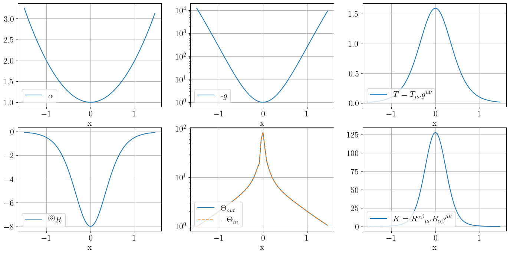

Example
import matplotlib.pyplot as plt
import numpy as np
import aurel
Quick demonstration
# Define the grid parameters
L = 3
N = 72
param = { 'Nx': N, 'Ny': N, 'Nz': N,
'xmin': -L/2, 'ymin': -L/2, 'zmin': -L/2,
'dx': L/N, 'dy': L/N, 'dz': L/N}
t = 0.0
# Define the finite difference and aurel classes
fd = aurel.FiniteDifference(param)
rel = aurel.AurelCore(fd)
print(rel.data.keys())
4th order finite difference schemes are defined
Cosmological constant set to AurelCore.Lambda = 0.00e+00
dict_keys([])
At this point the data dictionary is empty. Should you request a quantity, it will assume you are working with a vacuum Minkowski spacetime and calculate your quantity accordingly. Otherwise you need to provide the matter/spacetime.
Conformally flat metric
The user needs to input the spacetime and matter distribution. For an easy example we use a conformally flat metric:
# Define conformal factor
Om = 1 + fd.x**2
# Define spacetime
zeros = np.zeros_like(fd.x)
rel.data["alpha"] = Om
rel.data["gammadown3"] = np.array([[Om**2, zeros, zeros],
[zeros, Om**2, zeros],
[zeros, zeros, Om**2]])
# Define matter field
rel.data["rho_n"] = -4 / (rel.kappa * Om**4)
rel.data["press_n"] = -3 * rel["rho_n"]
rel.freeze_data() # freeze the data to not delete it in cache cleanup
print('Now the rel class knows:', rel.data.keys())
Now the rel class knows: dict_keys(['alpha', 'gammadown3', 'rho_n', 'press_n'])
Accessing Variables
Here we can directly plot anything, calling it from the aurel class. If not available it will automatically calculate it.
# Plot formating
plt.rcParams.update({
"text.usetex": True,
"font.family": "lmodern",
'font.size': 16.0,
})
def plot_var(var, varname, semilogy=False):
"""Plot a 1D slice of a 3D variable along the x-axis at the center of y and z."""
if semilogy:
plt.semilogy(fd.xarray,
var[:,fd.iycenter,fd.izcenter],
label=varname)
else:
plt.plot(fd.xarray,
var[:,fd.iycenter,fd.izcenter],
label=varname)
plt.xlabel('x')
plt.grid()
plt.legend(loc=3)
print(" *****************************************************")
# Lapse
plt.figure(figsize=(17, 8))
plt.subplot(231)
print(" - alpha was part of the input data")
plot_var(rel["alpha"], r'$\alpha$')
# Spacetime metric determinant
plt.subplot(232)
print(" - Calculations for gdet")
plot_var(-rel["gdet"],
r'-$g$', semilogy=True)
# Eulerian pressure
plt.subplot(233)
print(" - Calculations for trace of energy-stress tensor")
plot_var(rel["Ttrace"],
r'$T = T_{\mu\nu} g^{\mu\nu}$')
# 3 Ricci scalar
plt.subplot(234)
print(" - Calculations for s_RicciS")
plot_var(rel["s_RicciS"], r'${}^{(3)}R$')
# Spherically outgoing null ray expansion
plt.subplot(235)
print(" - Calculations for null_ray_exp")
plot_var(rel["null_ray_exp_out"], r'$\Theta_{out}$')
plt.semilogy(fd.xarray,
-rel["null_ray_exp_in"][:,fd.iycenter,fd.izcenter],
linestyle='--', label=r'$-\Theta_{in}$')
plt.legend(loc=3)
# Kretschmann scalar
plt.subplot(236)
print(" - Calculations for Kretschmann")
plot_var(rel["Kretschmann"],
r'$K = {R^{\alpha\beta}}_{\mu\nu} {R_{\alpha\beta}}^{\mu\nu}$')
- alpha was part of the input data
*****************************************************
- Calculations for gdet
Calculated gammadet: $\gamma$ Determinant of spatial metric
Calculated gdet: $g$ Determinant of spacetime metric
*****************************************************
- Calculations for trace of energy-stress tensor
Calculated Ttrace: $T$ Trace of the energy-stress tensor
*****************************************************
- Calculations for s_RicciS
Calculated gammaup3: $\gamma^{ij}$ Spatial metric with spatial indices up
Calculated s_Gamma_udd3: ${}^{(3)}{\Gamma^{k}}_{ij}$ Christoffel symbols of spatial metric with mixed spatial indices
Calculated s_Ricci_down3: ${}^{(3)}R_{ij}$ Ricci tensor of spatial metric with spatial indices down
Calculated s_RicciS: ${}^{(3)}R$ Ricci scalar of spatial metric
*****************************************************
- Calculations for null_ray_exp
Center of extraction sphere set to AurelCore.center = (0.0, 0.0, 0.0)
Calculated kxx: $K_{xx}$ Extrinsic curvature with xx indices down. I assume $K_{xx}=0$, if not then please define AurelCore.data['kxx'] = ...
Calculated kxy: $K_{xy}$ Extrinsic curvature with xy indices down. I assume $K_{xy}=0$, if not then please define AurelCore.data['kxy'] = ...
Calculated kxz: $K_{xz}$ Extrinsic curvature with xz indices down. I assume $K_{xz}=0$, if not then please define AurelCore.data['kxz'] = ...
Calculated kyy: $K_{yy}$ Extrinsic curvature with yy indices down. I assume $K_{yy}=0$, if not then please define AurelCore.data['kyy'] = ...
Calculated kyz: $K_{yz}$ Extrinsic curvature with yz indices down. I assume $K_{yz}=0$, if not then please define AurelCore.data['kyz'] = ...
Calculated kzz: $K_{zz}$ Extrinsic curvature with zz indices down. I assume $K_{zz}=0$, if not then please define AurelCore.data['kzz'] = ...
Calculated Kdown3: $K_{ij}$ Extrinsic curvature with spatial indices down
Calculated Ktrace: $K = \gamma^{ij}K_{ij}$ Trace of extrinsic curvature
Calculated null_ray_exp_out: $\Theta_{out}$ List of expansion of null rays radially going out
*****************************************************
Center of extraction sphere set to AurelCore.center = (0.0, 0.0, 0.0)
Calculated null_ray_exp_in: $\Theta_{in}$ List of expansion of null rays radially going in
- Calculations for Kretschmann
Calculated s_Riemann_uddd3: ${}^{(3)}{R^{i}}_{jkl}$ Riemann tensor of spatial metric with mixed spatial indices
Calculated s_Riemann_down3: ${}^{(3)}R_{ijkl}$ Riemann tensor of spatial metric with all spatial indices down
Calculated betax: $\beta^{x}$ x component of the shift vector with indices up. I assume $\beta^{x}=0$, if not then please define AurelCore.data['betax'] = ...
CLEAN-UP: Cleaning up cache after 20 calculations...
CLEAN-UP: data size before cleanup: 689.13 MB
CLEAN-UP: Removing cached value for 'gammaup3' used 4 calculations ago (size: 25.63 MB).
CLEAN-UP: Removing cached value for 's_Ricci_down3' used 14 calculations ago (size: 25.63 MB).
CLEAN-UP: Removing cached value for 's_Riemann_uddd3' used 2 calculations ago (size: 230.66 MB).
CLEAN-UP: Removed 3 items
CLEAN-UP: data size after cleanup: 407.22 MB
Calculated betay: $\beta^{y}$ y component of the shift vector with indices up. I assume $\beta^{y}=0$, if not then please define AurelCore.data['betay'] = ...
Calculated betaz: $\beta^{z}$ z component of the shift vector with indices up. I assume $\beta^{z}=0$, if not then please define AurelCore.data['betaz'] = ...
Calculated betaup3: $\beta^{i}$ Shift vector with spatial indices up
Calculated gammaup3: $\gamma^{ij}$ Spatial metric with spatial indices up
Calculated s_Ricci_down3: ${}^{(3)}R_{ij}$ Ricci tensor of spatial metric with spatial indices down
Calculated betadown3: $\beta_{i}$ Shift vector with spatial indices down
Calculated betamag: $\beta_{i}\beta^{i}$ Magnitude of shift vector
Calculated gtt: $g_{tt}$ Metric with tt indices down.
Calculated gdown4: $g_{\mu\nu}$ Spacetime metric with spacetime indices down
Calculated gup4: $g^{\mu\nu}$ Spacetime metric with spacetime indices up
Calculated rho0: $\rho_0$ Rest mass energy density. I assume $\rho_0=0$, if not then please define AurelCore.data['rho0'] = ...
Calculated eps: $\epsilon$ Specific internal energy. I assume $\epsilon=0$, if not then please define AurelCore.data['eps'] = ...
Calculated rho: $\rho$ Energy density
Calculated w_lorentz: $W$ Lorentz factor. I assume $W=1$, if not then please define AurelCore.data['w_lorentz'] = ...
Calculated uup0: $u^t$ Lagrangian fluid four velocity with time indice up
Calculated velx: $v^x$ x component of Eulerian fluid three velocity with indice up. I assume $v^x=0$, if not then please define AurelCore.data['velx'] = ...
Calculated vely: $v^y$ y component of Eulerian fluid three velocity with indice up. I assume $v^y=0$, if not then please define AurelCore.data['vely'] = ...
Calculated velz: $v^z$ z component of Eulerian fluid three velocity with indice up. I assume $v^z=0$, if not then please define AurelCore.data['velz'] = ...
Calculated velup3: $v^i$ Eulerian fluid three velocity with spatial indices up.
Calculated uup3: $u^i$ Lagrangian fluid four velocity with spatial indices up
CLEAN-UP: Cleaning up cache after 40 calculations...
CLEAN-UP: data size before cleanup: 617.94 MB
CLEAN-UP: Removing cached value for 'gammadet' used 39 calculations ago (size: 2.85 MB).
CLEAN-UP: Removing cached value for 'gdet' used 38 calculations ago (size: 2.85 MB).
CLEAN-UP: Removing cached value for 'Ttrace' used 37 calculations ago (size: 2.85 MB).
CLEAN-UP: Removing cached value for 'kxx' used 32 calculations ago (size: 2.85 MB).
CLEAN-UP: Removing cached value for 'kxy' used 31 calculations ago (size: 2.85 MB).
CLEAN-UP: Removing cached value for 'kxz' used 30 calculations ago (size: 2.85 MB).
CLEAN-UP: Removing cached value for 'kyy' used 29 calculations ago (size: 2.85 MB).
CLEAN-UP: Removing cached value for 'kyz' used 28 calculations ago (size: 2.85 MB).
CLEAN-UP: Removing cached value for 'kzz' used 27 calculations ago (size: 2.85 MB).
CLEAN-UP: Removing cached value for 'Kdown3' used 10 calculations ago (size: 25.63 MB).
CLEAN-UP: Removing cached value for 'null_ray_exp_out' used 24 calculations ago (size: 2.85 MB).
CLEAN-UP: Removing cached value for 'null_ray_exp_in' used 23 calculations ago (size: 2.85 MB).
CLEAN-UP: Removing cached value for 's_Riemann_down3' used 17 calculations ago (size: 230.66 MB).
CLEAN-UP: Removing cached value for 'gammaup3' used 16 calculations ago (size: 25.63 MB).
CLEAN-UP: Removing cached value for 's_Ricci_down3' used 15 calculations ago (size: 25.63 MB).
CLEAN-UP: Removing cached value for 'betadown3' used 12 calculations ago (size: 8.54 MB).
CLEAN-UP: Removing cached value for 'gdown4' used 11 calculations ago (size: 45.56 MB).
CLEAN-UP: Removing cached value for 'gup4' used 10 calculations ago (size: 45.56 MB).
CLEAN-UP: Removed 18 items
CLEAN-UP: data size after cleanup: 179.40 MB
Calculated uup4: $u^\mu$ Lagrangian fluid four velocity with spacetime indices up
Calculated press: $p$ Pressure. I assume $p=0$, if not then please define AurelCore.data['press'] = ...
Calculated betadown3: $\beta_{i}$ Shift vector with spatial indices down
Calculated gdown4: $g_{\mu\nu}$ Spacetime metric with spacetime indices down
Calculated udown4: $u_\mu$ Lagrangian fluid four velocity with spacetime indices down
Calculated hdown4: $h_{\mu\nu}$ Spatial metric orthonomal to fluid flow with spacetime indices down
Calculated Tdown4: $T_{\mu\nu}$ Energy-stress tensor with spacetime indices down
Calculated gup4: $g^{\mu\nu}$ Spacetime metric with spacetime indices up
Calculated st_Ricci_down3: ${}^{(4)}R_{ij}$ Ricci tensor of spacetime metric with spatial indices down
Calculated st_Riemann_down4: ${}^{(4)}R_{\alpha\beta\mu\nu}$ Riemann tensor of spacetime metric with spacetime indices down
Calculated st_Riemann_uudd4: ${}^{(4)}{R^{\alpha\beta}}_{\mu\nu}$ Riemann tensor of spacetime metric with mixed spacetime indices
Calculated Kretschmann: $K={R^{\alpha\beta}}_{\mu\nu}{R_{\alpha\beta}}^{\mu\nu}$ Kretschmann scalar
*****************************************************

del param, fd, rel # for new demonstration
In depth demonstration
Documentation
All functions are documented, and you can access it with the help() function.
help(aurel.AurelCore.freeze_data)
print('*********')
help(aurel.AurelCore.Ktrace)
print('*********')
help(aurel.AurelCore.s_covd)
Help on function freeze_data in module aurel.core:
freeze_data(self)
Freeze the data dictionary to prevent cache removal.
*********
Help on function Ktrace in module aurel.core:
Ktrace(self)
$K = \gamma^{ij}K_{ij}$ Trace of extrinsic curvature
*********
Help on function s_covd in module aurel.core:
s_covd(self, f, indexing)
Spatial covariant derivative of a 3D tensor of rank 0, 1 or 2.
Covariant derivative with respects to the spatial metric.
Parameters
----------
f : (..., Nx, Ny, Nz) array_like
Tensor of rank 0, 1 or 2. The first indices are the spatial ones.
indexing : str
'' for scalar,
'u' for upper index, 'd' for down index,
'uu' for two upper indices, 'dd' for two down indices,
'ud' for one upper and one down index
Returns
-------
(3, ..., Nx, Ny, Nz) array_like
Grid and finite difference setup
AurelCore takes as input the FiniteDifference class that defines the grid and will be used to calculate spatial derivatives.
# == Parameters
L = 10 # Data grid size
N = 64 # Number of data points per side
dx = L / N # Elementary grid size
# If you are running this on your own laptop and don't want the
# computation to take too much time, you should make N smaller.
# (But keep in mind that the accuracy increases as N increases)
# Here we use a cube, but aurel is able to work with a rectangular grid of
# arbitrary size and number of points so each side of the grid can be different
param = {
'Nx': N,
'Ny': N,
'Nz': N,
'xmin': - L / 2,
'ymin': - L / 2,
'zmin': - L / 2,
'dx': dx,
'dy': dx,
'dz': dx,
}
# == Finite Difference class
fd = aurel.FiniteDifference(
param,
boundary = 'no boundary',
# 'no boundary' is the default option,
# it calculates derivatives along edges using a combination of
# backward, centered and forward difference schemes
# 'periodic' and 'symmetric' are also available
# careful, if f is periodic, that does not mean dxf is periodic
fd_order = 4
# 4th order schemes are the default option,
# but 6th and 8th order schemes are also available
)
4th order finite difference schemes are defined
There are a couple useful variables that are defined in the initialization, see the docstrings:
fd.xarray, fd.yarray, fd.zarray: These are each 1D numpy arrays of the corresponding Cartesian coordinate
fd.x, fd.y, fd.z: These are each 3D numpy arrays of the corresponding Cartesian coordinate
fd.r, fd.phi (azimuth), fd.theta (inclination): These are each 3D numpy arrays of the corresponding Spherical coordinate
fd.cartesian_coords, fd.spherical_coords: These are lists of the previously listed coordinates
fd.ixcenter, fd.iycenter, fd.izcenter: These are each ints of the index of the grid position closest to the origin of the grid (x=0, y=0, z=0).
These are useful for plotting but also for generating analytical data.
Furthermore, the FiniteDifference class functions can be used independently to calculate spatial derivatives, see the fd functions.
FiniteDifference is defined outside of the AurelCore class, because all calculations in AurelCore are valid for a fixed time, while FiniteDifference is valid for all times. So for multiple timesteps, the Aurel class should be redefined or overwritten for each. The timesteps can then be treated independently.
aurel: Automatic Relativity
# == Aurel class
rel = aurel.AurelCore(
fd,
verbose = True # Default
)
Cosmological constant set to AurelCore.Lambda = 0.00e+00
# There are two main dictionnaries in aurel:
print(list(rel.data.keys()))
print(list(aurel.descriptions.keys()))
[]
['alpha', 'dtalpha', 'DDalpha', 'betax', 'betay', 'betaz', 'betaup3', 'dtbetax', 'dtbetay', 'dtbetaz', 'dtbetaup3', 'betadown3', 'betamag', 'nup4', 'ndown4', 'gxx', 'gxy', 'gxz', 'gyy', 'gyz', 'gzz', 'gammadown3', 'gammaup3', 'dtgammaup3', 'gammadet', 'gammadown4', 'gammaup4', 'gtt', 'gtx', 'gty', 'gtz', 'gdown4', 'gup4', 'gdet', 'psi_bssnok', 'phi_bssnok', 'dtphi_bssnok', 'gammadown3_bssnok', 'gammaup3_bssnok', 'dtgammadown3_bssnok', 'kxx', 'kxy', 'kxz', 'kyy', 'kyz', 'kzz', 'Kdown3', 'Kup3', 'Ktrace', 'dtKtrace', 'Adown3', 'Aup3', 'A2', 'Adown3_bssnok', 'Aup3_bssnok', 'A2_bssnok', 'dtAdown3_bssnok', 'dttau', 'rho0', 'press', 'eps', 'rho', 'enthalpy', 'w_lorentz', 'velx', 'vely', 'velz', 'velup3', 'velup4', 'veldown3', 'veldown4', 'uup0', 'uup3', 'uup4', 'udown3', 'udown4', 'hdown4', 'hdet', 'hmixed4', 'hup4', 'Tdown4', 'Tup4', 'Ttrace', 'rho_n', 'fluxup3_n', 'fluxdown3_n', 'angmomup3_n', 'angmomdown3_n', 'Stressup3_n', 'Stressdown3_n', 'Stresstrace_n', 'press_n', 'anisotropic_press_down3_n', 'rho_n_fromHam', 'fluxup3_n_fromMom', 'conserved_D', 'conserved_E', 'conserved_Sdown4', 'conserved_Sdown3', 'conserved_Sup4', 'conserved_Sup3', 'dtconserved', 'st_covd_udown4', 'accelerationdown4', 'accelerationup4', 's_covd_udown4', 'thetadown4', 'theta', 'sheardown4', 'shear2', 'omegadown4', 'omega2', 's_RicciS_u', 's_Gamma_udd3', 's_Riemann_uddd3', 's_Riemann_down3', 's_Ricci_down3', 's_RicciS', 'st_Gamma_udd4', 'st_Riemann_uddd4', 'st_Riemann_down4', 'st_Riemann_uudd4', 'st_Ricci_down4', 'st_Ricci_down3', 'st_RicciS', 'Einsteindown4', 'Kretschmann', 's_Gamma_udd3_bssnok', 's_Gamma_bssnok', 'dts_Gamma_bssnok', 's_Ricci_down3_bssnok', 's_RicciS_bssnok', 's_Ricci_down3_phi', 'st_Weyl_down4', 'Weyl_Psi', 'Psi4_lm', 'Weyl_invariants', 'eweyl_u_down4', 'eweyl_n_down3', 'bweyl_u_down4', 'bweyl_n_down3', 'null_ray_exp_out', 'null_ray_exp_in', 'Hamiltonian', 'Hamiltonian_Escale', 'Hamiltonian_norm', 'Momentumx', 'Momentumy', 'Momentumz', 'Momentumdownx', 'Momentumdowny', 'Momentumdownz', 'Momentumup3', 'Momentumdown3', 'Momentum_Escale', 'Momentumx_norm', 'Momentumy_norm', 'Momentumz_norm', 'Momentumdownx_norm', 'Momentumdowny_norm', 'Momentumdownz_norm']
As you can see, right now the AurelCore.data dictionnary is empty, so far we have not provided the spacetime or matter fields or asked for anything to be calculated.
The au.descriptions dictionnary lists all variables that aurel knows how to handle and calculate, and gives the corresponding discriptive documentation. To compute a variable, you can either call its method directly or access it like a dictionary key.
Taking an example with Ktrace, the trace of the extrinsic curvature, this variable can be called in two ways:
AurelCore.Ktrace() this is calling the function that calculates that variable, then directly returns it
AurelCore[“Ktrace”] this is calling the variable in the AurelCore.data dictionary. If it is not available, then AurelCore.Ktrace() is called to complete the calculation and its output is stored in AurelCore.data and also provided to the user. Following this, should AurelCore[“Ktrace”] be called again, the variable is directly retrieved from the AurelCore.data dictionary without the need for further calculations.
During these calcutions, many intermediary variables may be necessary. Thankfully, these are all listed in the desciptions dictionary. Therefore, if these are available in the data dictionary, these are provided directly, otherwise they will also be calculated. This creates a recursive automatic process managed by the __ getitem __ function to calculate all necessary variables until important variables that the user needs to define are reached. If the user has not defined these, it will assume those core terms correspond to the vacuum Minkowski spacetime.
Minkowski metric
If the user does not provide any matter field / spacetime, the vacuum Minkowski spacetime is assumed. See how those assumptions are made when retrieving a variable:
print('Determinant of the spatial metric: ',
np.mean(rel["gammadet"]))
Calculated gxx: $g_{xx}$ Metric with xx indices down. I assume $g_{xx}=1$, if not then please define AurelCore.data['gxx'] = ...
Calculated gxy: $g_{xy}$ Metric with xy indices down. I assume $g_{xy}=0$, if not then please define AurelCore.data['gxy'] = ...
Calculated gxz: $g_{xz}$ Metric with xz indices down. I assume $g_{xz}=0$, if not then please define AurelCore.data['gxz'] = ...
Calculated gyy: $g_{yy}$ Metric with yy indices down. I assume $g_{yy}=1$, if not then please define AurelCore.data['gyy'] = ...
Calculated gyz: $g_{yz}$ Metric with yz indices down. I assume $g_{yz}=0$, if not then please define AurelCore.data['gyz'] = ...
Calculated gzz: $g_{zz}$ Metric with zz indices down. I assume $g_{zz}=1$, if not then please define AurelCore.data['gzz'] = ...
Calculated gammadown3: $\gamma_{ij}$ Spatial metric with spatial indices down
Calculated gammadet: $\gamma$ Determinant of spatial metric
Determinant of the spatial metric: 1.0
To see all variable that take this assumption unless defined see the Assumed quantities list
To provide these missing terms, use the variable name as the key, and provide the variable as a numpy array with the appropriate data grid shape.
Harvey Tsoubelis metric
Now let us use a more interesting spacetime. A number of different analytical spacetimes can be found in the solutions folder. Here we use the Harvey Tsoubelis solution that corresponds to a vacuum plane wave solution.
Should you want to do numerical calculations from an analytical spacetime, this can be done by directly providing the corresponding numpy arrays, as was done for the Conformally flat metric example. Or you can create a python file for your specific solution and call it to pass the generated data to AurelCore.data as is demonstrated below.
We can use the same grid as before so we keep param and fd but AurelCore needs to be redefined for this example
del rel
rel = aurel.AurelCore(fd)
Cosmological constant set to AurelCore.Lambda = 0.00e+00
This next module generates numerical data for the analytical Harvey-Tsoubelis solution. The spacetime and matter variables are defined in the file as functions that depend on the grid coordinates
from aurel.solutions import Harvey_Tsoubelis as sol
# Define the coordinates used
t = 2
x, y, z = fd.cartesian_coords
# Update the AurelCore.data dictionnary to include the spacetime and matter solution
rel.data["gammadown3"] = sol.gammadown3(t, x, y, z) # (3, 3, Nx, Ny, Nz) numpy.array
rel.data["Kdown3"] = sol.Kdown3(t, x, y, z) # (3, 3, Nx, Ny, Nz)
rel.data["Tdown4"] = sol.Tdown4(t, x, y, z) # (4, 4, Nx, Ny, Nz)
rel.data["uup4"] = sol.uup4(t, x, y, z) # (4, Nx, Ny, Nz)
rel.freeze_data() # freeze the data to not delete it in cache cleanup
Notice here we directly passed, gammadown3 instead of gxx, gxy, gxz, … and Tdown4 instead of rho0. This is because the automatic recursive process will only go down to what it needs for the specific calculation requested.
Weyl Scalars and Petrov Classification
Call the Weyl scalars with “Weyl_Psi”, this gives a list whose elements correspond to the \(\Psi_i\) Weyl scalars computed with the quasi-kinnersley tetrad. Default AurelCore.tetrad = “quasi-kinnersley”, another option is to set it to another string and it will use an orthonormal tetrad base aligned with the Cartesian coordinates.
# Loop through the 5 scalars
for i in range(5):
Psi = fd.cutoffmask2(rel["Weyl_Psi"][i])
real_part = np.mean(np.real(Psi))
imag_part = np.mean(np.imag(Psi))
print(f'mean(abs(Psi_{i})) = ', real_part, ' + i(', imag_part, ')')
Tetrad is set to AurelCore.tetrad = quasi-Kinnersley
Calculated alpha: $\alpha$ Lapse. I assume $\alpha=1$, if not then please define AurelCore.data['alpha'] = ...
Calculated gammadet: $\gamma$ Determinant of spatial metric
Calculated gdet: $g$ Determinant of spacetime metric
Calculated gammaup3: $\gamma^{ij}$ Spatial metric with spatial indices up
Calculated s_Gamma_udd3: ${}^{(3)}{\Gamma^{k}}_{ij}$ Christoffel symbols of spatial metric with mixed spatial indices
Calculated s_Ricci_down3: ${}^{(3)}R_{ij}$ Ricci tensor of spatial metric with spatial indices down
Calculated Ktrace: $K = \gamma^{ij}K_{ij}$ Trace of extrinsic curvature
Calculated Stressup3_n: $S^{\{n\}ij}$ Stress tensor in the $n^\mu$ frame with spatial indices up
Calculated Stressdown3_n: $S^{\{n\}}_{ij}$ Stress tensor in the $n^\mu$ frame with spatial indices down
Calculated eweyl_n_down3: $E^{\{n\}}_{ij}$ Electric part of the Weyl tensor on the hypersurface orthogonal to $n^{\mu}$ with spatial indices down
Using $\beta^i = 0$ shortcut for s_to_st
Calculated bweyl_n_down3: $B^{\{n\}}_{ij}$ Magnetic part of the Weyl tensor on the hypersurface orthogonal to $n^{\mu}$ with spatial indices down
Using $\beta^i = 0$ shortcut for s_to_st
Calculated betax: $\beta^{x}$ x component of the shift vector with indices up. I assume $\beta^{x}=0$, if not then please define AurelCore.data['betax'] = ...
Calculated betay: $\beta^{y}$ y component of the shift vector with indices up. I assume $\beta^{y}=0$, if not then please define AurelCore.data['betay'] = ...
Calculated betaz: $\beta^{z}$ z component of the shift vector with indices up. I assume $\beta^{z}=0$, if not then please define AurelCore.data['betaz'] = ...
Calculated betaup3: $\beta^{i}$ Shift vector with spatial indices up
Calculated betadown3: $\beta_{i}$ Shift vector with spatial indices down
Calculated betamag: $\beta_{i}\beta^{i}$ Magnitude of shift vector
Calculated gtt: $g_{tt}$ Metric with tt indices down.
Calculated gdown4: $g_{\mu\nu}$ Spacetime metric with spacetime indices down
Calculated ndown4: $n_{\mu}$ Timelike vector normal to the spatial metric with spacetime indices down
CLEAN-UP: Cleaning up cache after 20 calculations...
CLEAN-UP: data size before cleanup: 308.00 MB
CLEAN-UP: Removing cached value for 'gammaup3' used 10 calculations ago (size: 18.00 MB).
CLEAN-UP: Removing cached value for 's_Ricci_down3' used 14 calculations ago (size: 18.00 MB).
CLEAN-UP: Removing cached value for 'Stressup3_n' used 12 calculations ago (size: 18.00 MB).
CLEAN-UP: Removing cached value for 'Stressdown3_n' used 11 calculations ago (size: 18.00 MB).
CLEAN-UP: Removing cached value for 'eweyl_n_down3' used 10 calculations ago (size: 18.00 MB).
CLEAN-UP: Removing cached value for 'bweyl_n_down3' used 9 calculations ago (size: 18.00 MB).
CLEAN-UP: Removed 6 items
CLEAN-UP: data size after cleanup: 200.00 MB
Calculated gup4: $g^{\mu\nu}$ Spacetime metric with spacetime indices up
Calculated nup4: $n^{\mu}$ Timelike vector normal to the spatial metric with spacetime indices up
Calculated st_Weyl_down4: $C_{\alpha\beta\mu\nu}$ Weyl tensor of spacetime metric with spacetime indices down
Calculated Weyl_Psi: $\Psi_0, \; \Psi_1, \; \Psi_2, \; \Psi_3, \; \Psi_4$ List of Weyl scalars for an null vector base defined with AurelCore.tetrad
mean(abs(Psi_0)) = -0.056854352588593 + i( 0.00043378426001398045 )
mean(abs(Psi_1)) = 0.00036435542405428655 + i( 0.000509169278365013 )
mean(abs(Psi_2)) = 0.001193033656516685 + i( -0.004897107788552394 )
mean(abs(Psi_3)) = -8.056185229536604e-05 + i( -0.00013268517262661795 )
mean(abs(Psi_4)) = -0.04428660238370453 + i( 0.009394586101073375 )
Notice that here I’m applying the FiniteDifference.cutoffmask function before taking the mean. By default the class uses a combination of backward and forward finite difference schemes for the boundaries. Those slightly underperform compared to the centered one, so that is why I remove the edge points affected by those schemes.
help(fd.cutoffmask2)
Help on method cutoffmask2 in module aurel.finitedifference:
cutoffmask2(f) method of aurel.finitedifference.FiniteDifference instance
Remove boundary points, for when FDs were applied twice.
Then we can see what the Weyl scalars look like, should we use the other tetrad.
del rel.data["Weyl_Psi"], rel.last_accessed["Weyl_Psi"]
rel.tetrad = 'not Kinnersley'
# Loop through the 5 scalars
for i in range(5):
Psi = fd.cutoffmask2(rel["Weyl_Psi"][i])
real_part = np.mean(np.real(Psi))
imag_part = np.mean(np.imag(Psi))
print(f'mean(abs(Psi_{i})) = ', real_part, ' + i(', imag_part, ')')
Tetrad is set to AurelCore.tetrad = not Kinnersley
Calculated Weyl_Psi: $\Psi_0, \; \Psi_1, \; \Psi_2, \; \Psi_3, \; \Psi_4$ List of Weyl scalars for an null vector base defined with AurelCore.tetrad
mean(abs(Psi_0)) = 0.24995009837252477 + i( -2.7508328335004755e-05 )
mean(abs(Psi_1)) = 8.2494878838321e-17 + i( 2.561661433370836e-16 )
mean(abs(Psi_2)) = 8.306760178337517e-06 + i( -1.2493610844713206e-05 )
mean(abs(Psi_3)) = -4.9365893338814685e-17 + i( 2.2303105092043635e-16 )
mean(abs(Psi_4)) = -4.995234030064759e-05 + i( -7.456392419718125e-06 )
In this case this specific tetrad provides the null principal directions in Newmann-Penrose’s formalism. Where \(\Psi_0 = t^{-2}\) (and we previously defined t = 2) and the others are numerical noise that decreases as resolution is increased.
However, while two sets of tetrads are available in this code, frame rotations to find the null principal directions are not performed.
We can further check the Petrov classification by computing the Weyl invariants. You get these by calling “Weyl_invariants”, this provides a dictionary whose keys are crucial for spacetime classification. See Exact Solutions of Einstein’s Field Equations by Stephani, H., D. Kramer, M. MacCallum, C. Hoenselaers, and E. Herlt (2003).
for i in ['I', 'J', 'L', 'K', 'N']:
invar = fd.cutoffmask2(rel["Weyl_invariants"][i])
print(i, '=', np.mean(abs(invar)))
WARNING: I'm not switching Psi0 and Psi4 here, so the invariants are not correct if Psi4 = 0.Same for Psi1 and Psi3.
Calculated Weyl_invariants: $I, \; J, \; L, \; K, \; N$ Dictionary of Weyl invariants
I = 1.2624275719982578e-05
J = 1.8939608190126647e-10
L = 7.57742580080751e-10
K = 5.495319107184303e-23
N = 3.2198859228644216e-14
All invariants are numerical zero, their value decreasing as the scheme converges, however we have seen \(\Psi_0 \neq 0\) so \(C_{\alpha\beta\mu\nu} \neq 0\) (so the spacetime is not conformally flat). Therefore this spacetime is of Petrov type N.
We can check this with the electric and magnetic parts of the Weyl tensor as \(E^2 = B^2 = 1/(4t^4)\). With \(E^2 = \frac{1}{2}E^{ij}E_{ij}\).
print('E^2 =', np.mean(fd.cutoffmask2(
rel.magnitude3(rel["eweyl_n_down3"]))))
print('B^2 =', np.mean(fd.cutoffmask2(
rel.magnitude3(rel["bweyl_n_down3"]))))
Calculated gammaup3: $\gamma^{ij}$ Spatial metric with spatial indices up
Calculated s_Ricci_down3: ${}^{(3)}R_{ij}$ Ricci tensor of spatial metric with spatial indices down
Calculated Stressup3_n: $S^{\{n\}ij}$ Stress tensor in the $n^\mu$ frame with spatial indices up
Calculated Stressdown3_n: $S^{\{n\}}_{ij}$ Stress tensor in the $n^\mu$ frame with spatial indices down
Calculated eweyl_n_down3: $E^{\{n\}}_{ij}$ Electric part of the Weyl tensor on the hypersurface orthogonal to $n^{\mu}$ with spatial indices down
E^2 = 0.015612521054258557
Calculated bweyl_n_down3: $B^{\{n\}}_{ij}$ Magnetic part of the Weyl tensor on the hypersurface orthogonal to $n^{\mu}$ with spatial indices down
B^2 = 0.01562500711300769
Cache management
Notice that aurel went through cleanup cache processes. Indeed during the many calculations, AurelCore.data can become quite large. So after AurelCore.clear_cache_every_nbr_calc (= 20 default) number of calculation, or when it exceeds AurelCore.memory_threshold_inGB (= 4 default), AurelCore.cleanup_cache removes variables based on how heavy and old they are.
To protect certain variables, the AurelCore.var_importance dictionarry weights the variable’s strain. By default they all start with 1.0, but a variable that should never be removed is then AurelCore.var_importance[varname] = 0.0 (not strenuous to keep this).
The AurelCore.freeze() function now takes meaning as this takes all the variables currently defined in AurelCore.data and updates their var_importance to never perceive those as strenuous to deal with, and so they are protected to never be deleted in the cleanup_cache operation.
Hope this helps!
Now for an example working with simulation data, see the tov_ET notebook